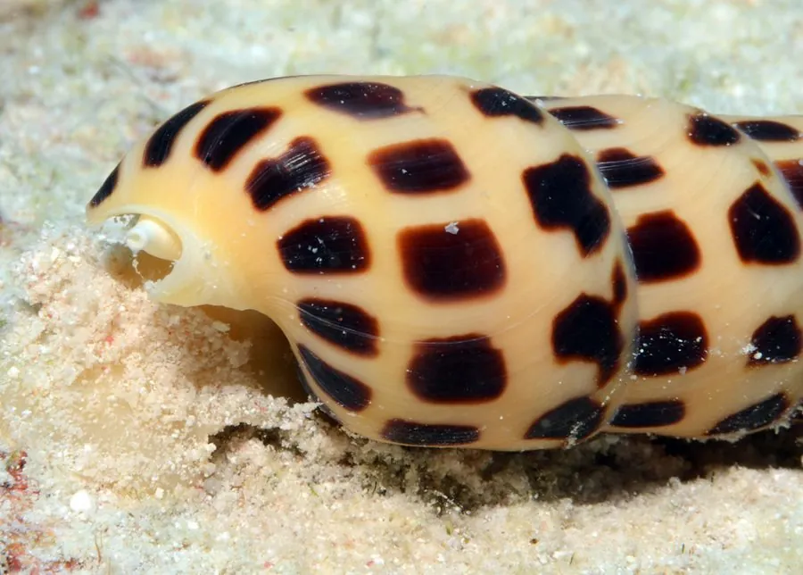

软体动物 · 动物界
笋螺 Terebra subulata

壳形细长如笋尖的笋螺，螺层多达二十余层，壳面有纵肋和螺旋纹，潜伏在沙中捕食多毛类，毒性较强。
- 分类
- 门软体动物门纲腹足纲目新腹足目科笋螺科属笋螺属
- 栖息环境
- 潮间带下区至水深数十米的沙质海底，白天潜伏沙中
- 地理分布
- 印度洋至西太平洋热带海域，包括中国南海、菲律宾、印度尼西亚和澳大利亚北部
- 保护级别
- 尚无专门评估；活体具毒腺，采集时需注意
物种志
笋螺的贝壳呈细长的锥形，壳高可达十至十五厘米，壳质坚实，壳面呈灰白至浅褐色，常有褐色的斑带，螺层多达二十余层，每一层都有纵肋和细密的螺旋纹，壳顶尖细，壳口小，呈狭长的卵圆形，前沟明显。它的壳形像一根笋尖，笋螺之名由此而来。足部较小，水管长，能伸出壳外探测猎物。口内有毒腺，齿舌特化成小钩，能注射毒素。
它分布于印度洋至西太平洋的热带海域，包括中国南海、菲律宾、印度尼西亚和澳大利亚北部，栖息在潮间带下区至水深数十米的沙质海底，白天潜伏在沙中，只露出水管，夜间出来活动。它是肉食性螺类，专门捕食沙中的多毛类和蠕虫，靠毒液麻痹猎物后吞食。繁殖期在春夏，雌雄异体，卵囊粘在沙面上。笋螺的齿舌能注射毒素，活体接触时可能被刺伤，采集时需注意。目前尚无专门的保护评估。
形态与习性
- 食性捕食沙中的多毛类和蠕虫
- 壳高可达十至十五厘米，螺层二十余层
- 毒素口内有毒腺，齿舌特化成小钩可注射毒素
- 栖息环境潮间带下区至水深数十米的沙质海底
- 习性白天潜伏沙中只露水管，夜间活动
- 繁殖春夏产卵，卵囊粘附于沙面
趣味知识
- 笋螺的壳又细又尖，像一根插在沙里的竹笋，螺层可多达二十多层。
- 它白天把身体埋在沙里，只伸出一根水管探测，猎物经过就突然袭击。
- 笋螺的齿舌像一支小注射器，能把毒液注入猎物体内使其麻痹。